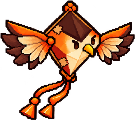
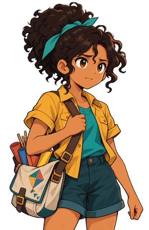
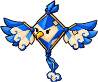

Soulmonsters · Elo das Ruínas · Godot · referência para o Codex
HUD Recorte v1
Uma página de mangá colorida com tinta de Splatoon. A estrutura vem de Persona (diagonais de 12°, seleção invertida); o traço vem do mangá (nanquim a pincel, retícula, linhas de velocidade, onomatopeias); a energia vem do Splatoon (respingos, cores de equipe vivas, adesivos). Tudo dosado: calma no dia a dia, explosão nos momentos. As medidas oficiais estão em ESPECIFICACAO.md; esta página mostra a aparência esperada.
Cores
Nanquim, tinta e papel fazem quase tudo, como numa página de mangá. As duas tintas de equipe são vivas, como no Splatoon: ciano é você e o elo com o parceiro, coral é o rival e a ação principal. Dourado só para recompensa e crítico.
Atravessou a ponte? O mirante do outro lado tem um baú. A rampa fica perto do mato alto.
Texto · Nunito 600 · 30 px no diálogo, 22–26 px no resto
Componentes e estados
A forma vem do StyleBoxFlat (skew 0,21; sombra sólida 6,6) e o traço de nanquim vem de uma moldura 9-patch desenhada a pincel. O foco vira uma pincelada de papel e desloca o item; nunca depende só da cor.
Confirmar
normal
Confirmar
foco / hover
Confirmar
pressionado
Confirmar
desabilitado
Cancelar
secundário
Mochila
item focado
Pipa Dex
item normal
Oficina
bloqueado
Itens
Linhas
Rabiolas
abas
vida · elo · vida baixa
interruptor
EAEsc
glyphs
Exploração
Menos de 10% da tela. A placa de área entra ao mudar de região e recolhe em 3 s; o objetivo some em 4 s; o prompt só aparece perto do alvo.
Veredas do Encanamento
Mirante
Leve a rabiola até a Nina

CarcaráNv. 12
Novo: Linha encerada
EAbrirBaú do mirante
1920×1080 placa de área 560×88 · objetivo · minimapa em losango 220 · parceiro com linha do elo · aviso · prompt de interação
Diálogo

Vou até lá
Onde fica a rampa?
Depois
Atravessou a ponte? O mirante do outro lado tem um baú. A rampa fica perto do mato alto.
Nina
1920×1080 caixa 1560×240 cortada nas pontas · placa do nome 360×64 · retrato atrás da caixa · escolhas em tiras com a focada invertida
Pausa e Mochila
Mochila
Pipa Dex
Parceiros
Missões
Oficina
Salvar
Configurações
Sair
Mochila
Itens
Linhas
Rabiolas
Chave
Carretel reforçado×3
Papel de seda×12
Cola de polvilho×5
Vareta de bambu×8
Linha encerada×0
Carretel reforçado
Segura mais tensão de linha. Use antes de um duelo para começar com a linha 20% mais firme.
Usar
Descartar
AConfirmarBVoltarLBRBAba
1920×1080 corte diagonal com 45% da tela · lista em escada (recuo de 18 px) · painel 1080×820 com título extrapolando · abas · lista e detalhe · rodapé de comandos
Batalha
Duelo em tempo real. O que decide a luta aparece no céu, junto das pipas: mira no cruzamento das linhas, qualidade do corte, avisos e números. Os cantos guardam só o estado: vitórias, relógio, linha, armação, energia e ações.

TCHAC!
−42
K
KaelPipeiro · Nv. 3
SelvagemPipa de rua
!
Carcará · Nv. 858%
42Rodada 1
Ventania · vento ➜
Segure F para fugir
Azulão · Nv. 377/120
ShiftEsquiva
QPuxão
E3Chicote
RFoco ▮▮▮
G14Guarda
EspaçoPulo do Elo
1920×1080 sua linha em ciano e a do rival em coral · mira dourada no cruzamento, com ÂNGULO · RELADA · CENTRO todos acesos (crítico) · arco de carga do Puxão na sua pipa · energia em 10 blocos com o custo marcado · barra de ações com recarga em varredura diagonal, sem energia e golpe especial pronto
Sinais no céu
Desenhados junto das pipas, sem painel. Contorno azul-noite para ler sobre céu claro e nuvens.
Corte válido mira creme no cruzamentoFora da faixa tracejado apagado: ângulo fechado ou longe do centroAviso de golpe alcance tracejado que preenche até o impactoEsquiva perfeita anel que se fecha até o instante idealEscudo de entrada halo creme translúcidoContra-ataque 2 s em que o próximo acerto é crítico
Linguagem de tinta
As peças que o Codex desenha à mão (seção 3.1 da especificação). Todas brancas ou em nanquim, para recolorir no Godot. Respingos sempre na cor de quem agiu.
Painel
Moldura de nanquim 9-patch a pincel, mais grossa embaixo e à direita
Mochila
Pincelada de seleção substitui a faixa lisa do focoRespingos P · M · G mancha, gotas satélite, contorno só em fundo claroEscorrido no máximo um por manchaRetícula pontos a 45°, degradê; 8–25% conforme a telaLinhas de concentração 250 ms no crítico e no grito
TCHAC!VUPT! TOC!
Onomatopeias Bangers, texto vivo, em português
!?
Emoções de mangá adesivos colados no retrato
NOVO!
Adesivo respingo com borda clara; o texto é Label por cima
Transição em mancha 450 ms na cor do vencedor
Resultado
TCHAC!
Vitória
Carcará+ 340 XP
Subiu de nível · Nv. 13
Rabiola antiga
120 moedas
AContinuar
1920×1080 faixa diagonal atravessando a tela · XP em dourado animado uma vez · recompensas raras com contorno dourado, sem brilho